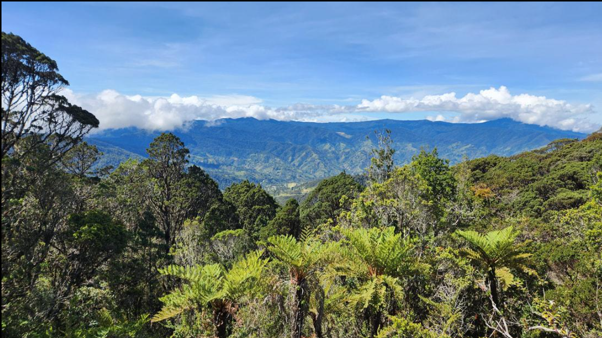
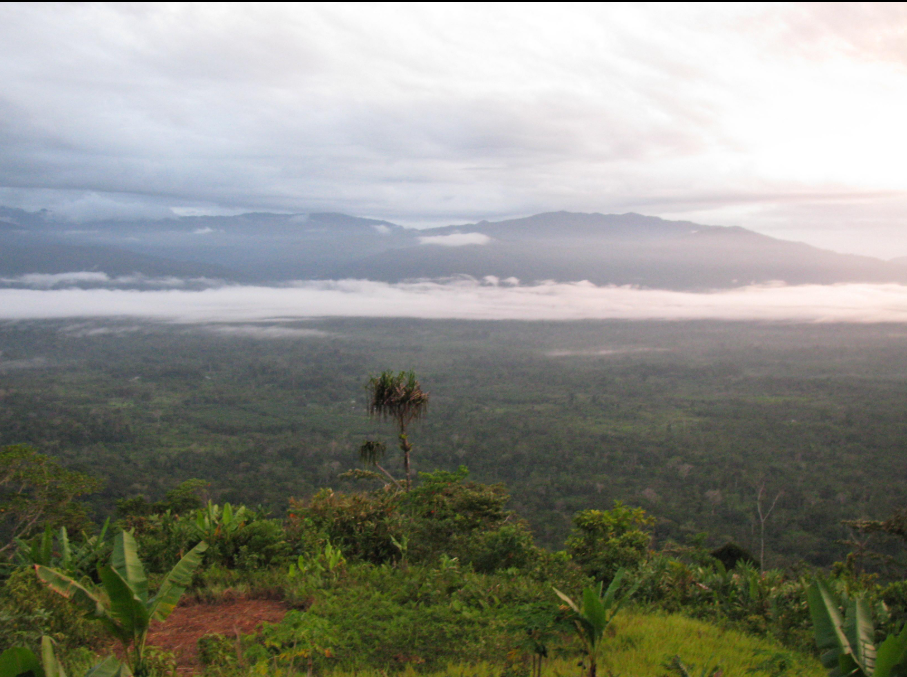
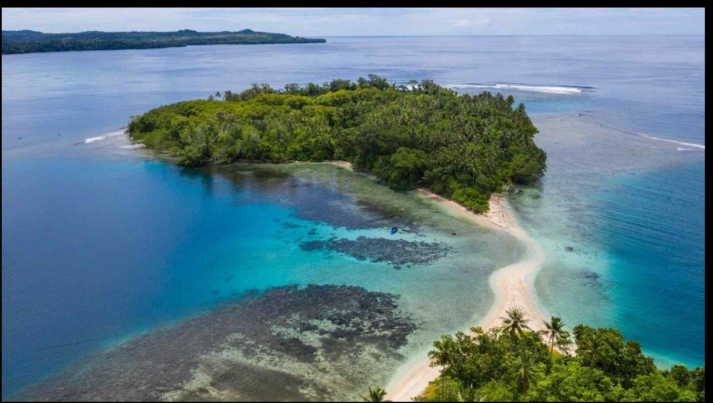
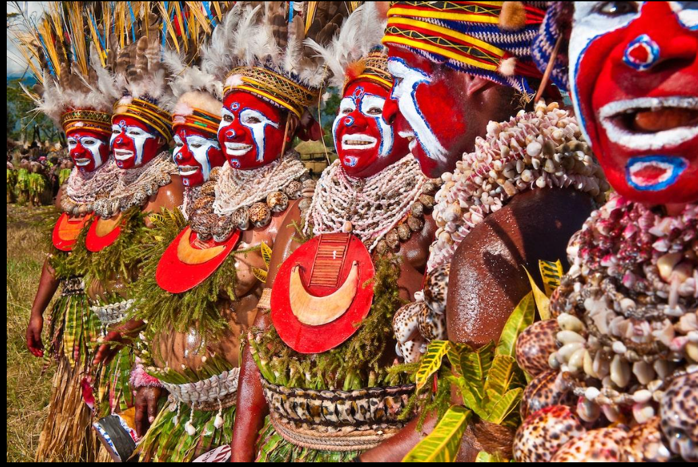

Port Moresby

Port Moresby is Papua New Guinea's capital city. It provides an introduction to urban life, local services, coastal scenery and cultural attractions.
- Explore the capital
- Visit cultural attractions
- Enjoy coastal scenery
Explore Papua New Guinea

Port Moresby is Papua New Guinea's capital city. It provides an introduction to urban life, local services, coastal scenery and cultural attractions.

The Kokoda area is associated with mountain landscapes, trekking and significant historical stories.

Milne Bay is a coastal and island region known for tropical scenery and opportunities for marine experiences.

Papua New Guinea is home to many communities with distinctive languages, traditions, crafts, music and cultural practices.